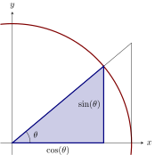
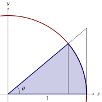
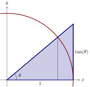

The Squeeze theorem allows us to exchange difficult functions for easy functions.
|  |  |  |
| Triangle | Sector | Triangle |
From our diagrams above we see that and computing these areas we find Multiplying through by , and recalling that we obtain Dividing through by and taking the reciprocals (reversing the inequalities), we find Note, and , so these inequalities hold for all . Additionally, we know and so we conclude by the Squeeze Theorem, .
When solving a problem with the Squeeze Theorem, one must write a sort of mathematical poem. You have to tell your friendly reader exactly which functions you are using to “squeeze-out” your limit.